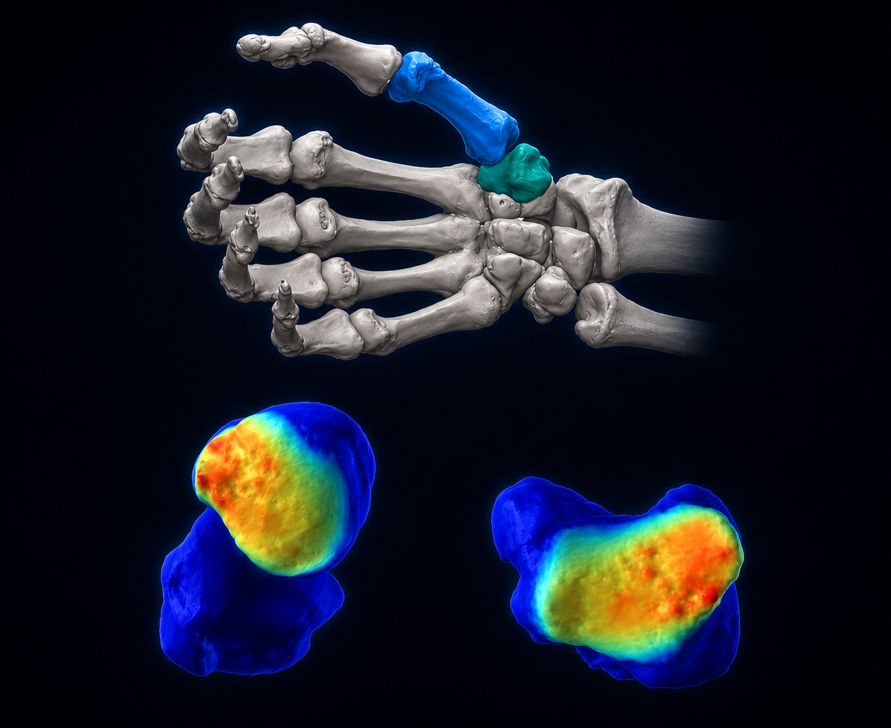
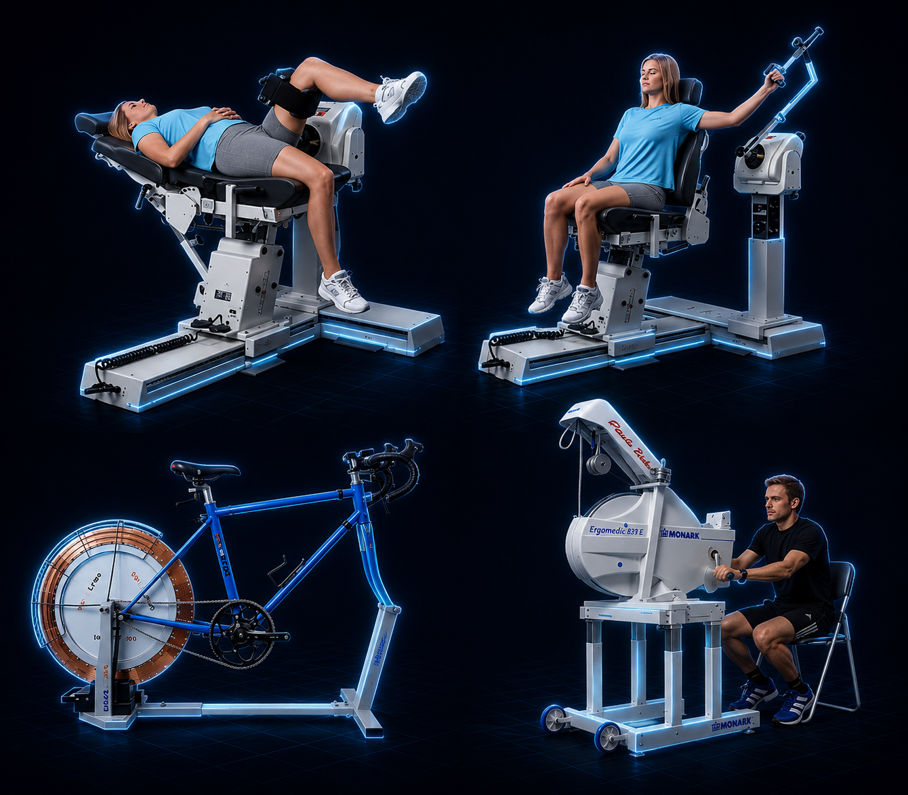
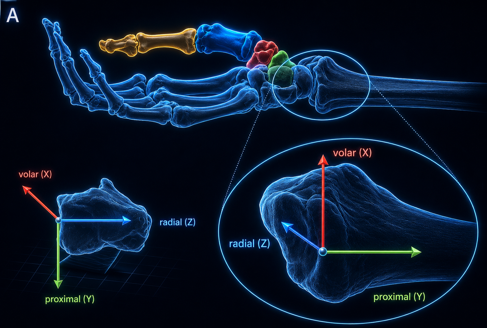
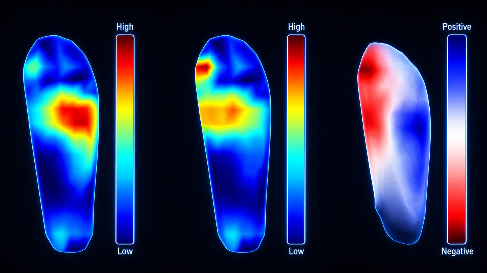
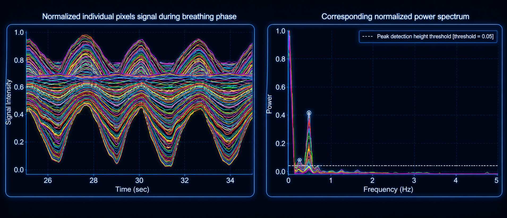
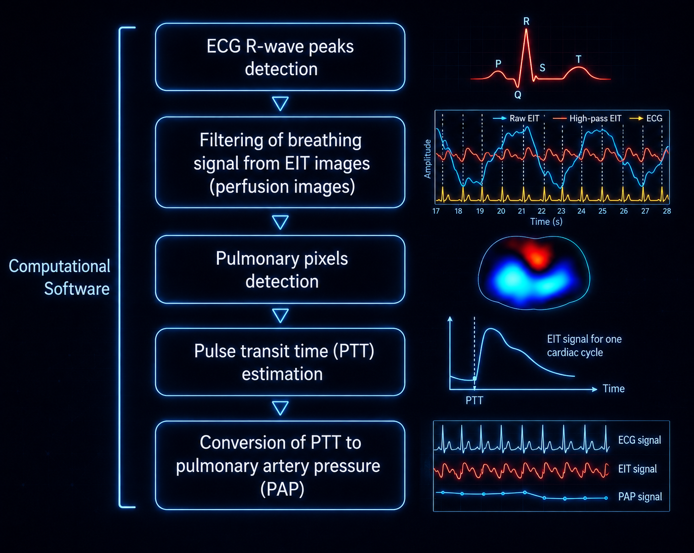

01 / Engineering systems
Engineering Expertise
Mechanical and biomedical systems, computational modeling, intelligent algorithms, applied research, and production engineering.
More than a decade translating physical systems, medical images, physiological signals, complex data, and product requirements into validated models, software, experiments, and technical programs.
- Multidisciplinary Systems
- Research & Modeling
- Verification & Validation
- Technical Leadership
Mechanical, Biomedical & Human Systems

Patient-Specific Biomedical Engineering
Anatomy-to-mechanics translation
CT-derived anatomy, three-dimensional morphology, finite-element modeling, and stress mapping support quantitative joint mechanics, device design, and patient-specific planning.

Sports Biomechanics & Human Performance
Instrumented experimentation
Motion, electromyography, pressure, footwear, fatigue, comfort, and performance studies connect controlled protocols with real-world human movement.

Orthopedic Kinematics & Joint Mechanics
Dynamic motion and contact biomechanics
Coordinate-system definition, dynamic CT, joint kinematics, contact mechanics, and osteoarthritis characterization enable interpretable models of native and reconstructed joints.

MedTech Sensing & Load Mapping
Wearables, implantables, and device analytics
Spatial load distributions, digital biomarkers, remote monitoring, and sensor-derived measurements connect physiology and mechanics to actionable product and clinical insights.
Computational & Intelligent Engineering Systems

Computer Vision & Image-Based Modeling
From images to computable geometry
Two- and three-dimensional pipelines support annotation, segmentation, reconstruction, geometry extraction, quality optimization, and computational modeling.

Signal Processing & Digital Biomarkers
Time- and frequency-domain analytics
Denoising, event detection, feature engineering, spectral analysis, robustness testing, and physiological estimation support multimodal sensor systems.

Software & Algorithm Pipelines
Validated algorithms in production-grade code
Reproducible processing, automated quality checks, APIs, testing, CI/CD, and workflow tooling turn research algorithms into maintainable systems.

Machine Learning for Imaging
Segmentation, reconstruction, and enhancement
Deep and multi-scale architectures support automated segmentation, super-resolution, quality control, model robustness, and grounded validation.
Real-World Impact
Engineering expertise becomes useful when technical systems improve decisions, devices, processes, products, and measurable outcomes.
- Improved diagnosis and monitoring
- Personalized planning
- Performance optimization
- Better devices and systems
- Stronger critical outcomes
Engineering Delivery Principles
Reliable engineering combines precise experimental design, validated computational models, reproducible data pipelines, explainable outputs, and integration into practical workflows.
Engineering Workflow
- Data CollectionImaging, sensors, signals, experiments, and records
- PreprocessingCleaning, annotation, normalization, and alignment
- Model DevelopmentStatistical, machine-learning, and physics-informed models
- ValidationTesting, uncertainty, cross-validation, and metrics
- DeploymentSoftware, devices, products, and monitoring
- ImpactBetter decisions, systems, and outcomes


 Git
Git SourceTree
SourceTree GitHub
GitHub Bitbucket
Bitbucket VS Code
VS Code Markdown
Markdown Terminal
Terminal PowerShell
PowerShell


 Atlassian
Atlassian


 Vision
Vision Plan
Plan Align
Align Execute
Execute Review
Review Improve
Improve Scope
Scope Prioritize
Prioritize Build
Build Validate
Validate Launch
Launch Optimize
Optimize Vision & Alignment
Vision & Alignment Ownership & Accountability
Ownership & Accountability Structured Execution
Structured Execution Technical Excellence
Technical Excellence Collaborative Culture
Collaborative Culture Knowledge Sharing
Knowledge Sharing Scalability & Reliability
Scalability & Reliability Continuous Learning
Continuous Learning